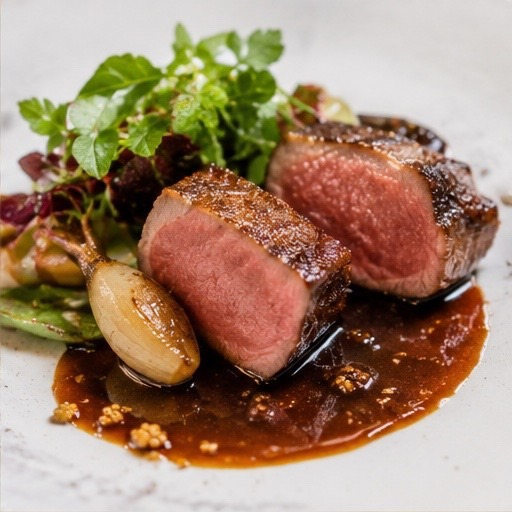
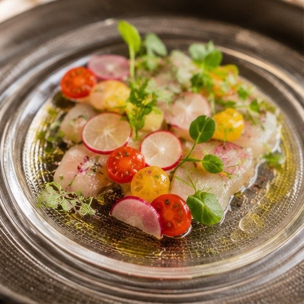
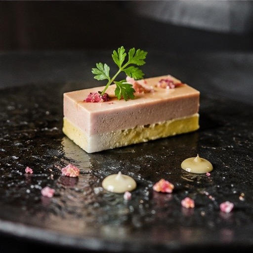
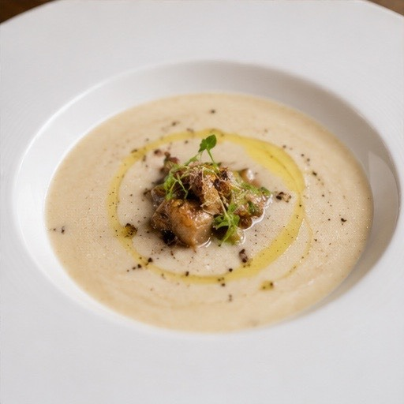
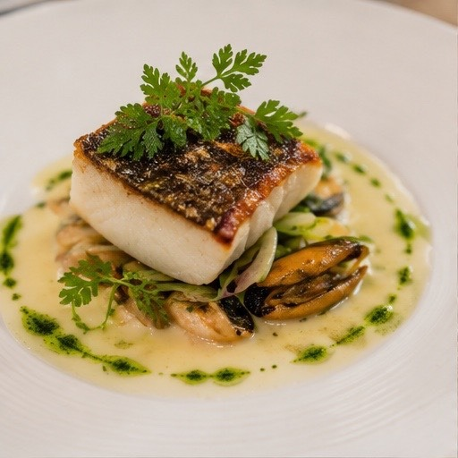
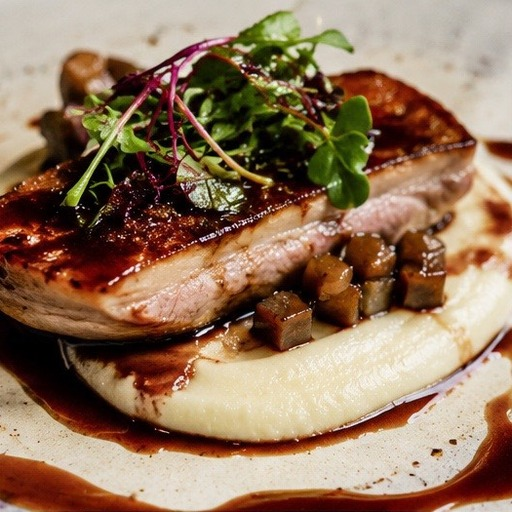
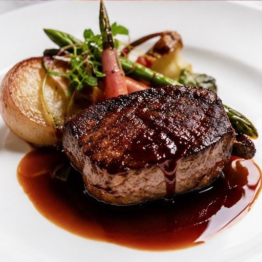
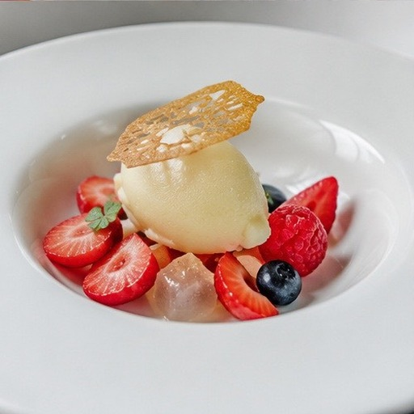
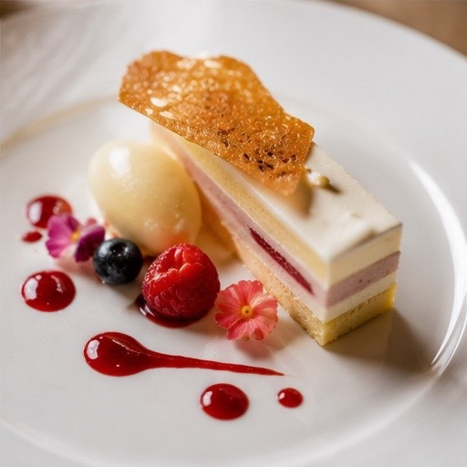

Menu
お品書き
お品書きは月に一度、仕入れにあわせて書き換えています。
ここに載せているのは、その一例です。黒板には、その日だけの一皿が並びます。








帆立貝とキャビアのカルパッチョ 柑橘のジュレ
¥2,400
旬魚のカルパッチョ 彩り野菜とハーブのマリネ
¥2,200
フォアグラのテリーヌ ブリオッシュを添えて
¥2,800
自家製シャルキュトリの盛り合わせ
¥2,600
鴨のスモークと洋梨 くるみのサラダ
¥1,900
自家製ピクルスとオリーブ
¥900
フォアグラのポワレ ポルト酒と無花果のソース
¥3,200
エスカルゴのブルギニヨンバター（6個）
¥1,800
本日のパイ包み焼き
¥1,900
帆立貝と季節野菜のヴァプール
¥2,200
オニオングラタン仕立ての一皿
¥1,600
きのこと生ハムのタルトフランベ
¥1,700
白いんげん豆のヴルーテ 冬トリュフの香り
¥1,800
季節野菜のポタージュ
¥1,200
スープ・ド・ポワソン ルイユを添えて
¥1,600
グリーンサラダ
¥900
魚介とハーブのサラダ
¥1,600
真鯛のポワレ ムール貝のブイヨン
¥3,600
本日の鮮魚料理 その日のスタイルで
時価
オマール海老のロースト
¥5,800
前日までのご予約をお願いいたします。
いかとムール貝の白ワイン蒸し
¥2,400
仔羊のロティ 赤ワインと黒胡椒のソース
¥4,200
鴨胸肉のロースト じゃがいものピュレ
¥3,800
黒毛和牛フィレのグリエ 春野菜を添えて
¥5,600
産地はその日の仕入れによって変わります。
国産牛ほほ肉の赤ワイン煮込み
¥3,400
大山地鶏のフリカッセ
¥2,900
豚肩ロースのシュークルート
¥3,000
本日のデセール
¥1,000〜
冷菓・焼き菓子など5〜6種の中からお選びいただけます。
苺と薔薇のミルフイユ仕立て
¥1,200
季節の果実とヴァニラのソルベ
¥1,000
チーズの盛り合わせ
¥1,800
自家製バゲット
¥400
ガーリックトースト
¥600
グラスワイン（赤・白）
¥1,000〜
常時6〜8種をご用意。お料理に合わせてお選びします。
ボトルワイン
¥5,000〜
シャンパーニュ（グラス）
¥1,800
自家製サングリア
¥900
ビール（生・瓶）
¥800
コーヒー／紅茶／ハーブティー
¥600
価格はすべて税込表示です。サービス料はいただいておりません。
アレルギー・苦手な食材がございましたら、ご予約時またはご注文時にお申しつけください。可能な限り対応いたします。
※ 本サイトはデザインサンプルです。掲載の料理名・価格はすべて架空のものです。
平日のお昼は、1,000円からの日替わりランチを。
アラカルトのほか、ランチ4,200円・ディナー8,800円からのコースもご用意しています。